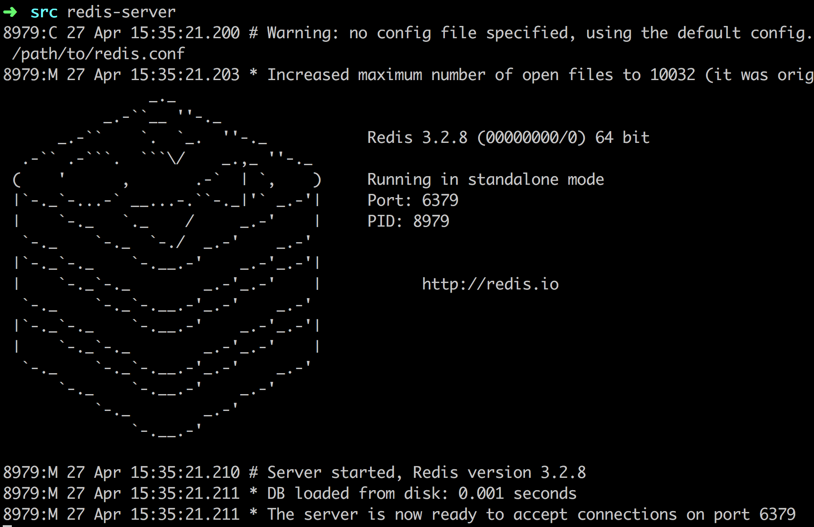

- 01 导读：课程概要.md.html
- 02 WebFlux 快速入门实践.md.html
- 03 WebFlux Web CRUD 实践.md.html
- 04 WebFlux 整合 MongoDB.md.html
- 05 WebFlux 整合 Thymeleaf.md.html
- 06 WebFlux 中 Thymeleaf 和 MongoDB 实践.md.html
- 07 WebFlux 整合 Redis.md.html
- 08 WebFlux 中 Redis 实现缓存.md.html
- 09 WebFlux 中 WebSocket 实现通信.md.html
- 10 WebFlux 集成测试及部署.md.html
- 11 WebFlux 实战图书管理系统.md.html
- 捐赠
07 WebFlux 整合 Redis
前言
上一篇内容讲了如何整合 MongoDB，这里继续讲如何操作 Redis 这个数据源，那什么是 Reids？
Redis 是一个高性能的 key-value 数据库，GitHub 地址详见这里。GitHub 是这么描述的：
Redis is an in-memory database that persists on disk. The data model is key-value, but many different kind of values are supported: Strings, Lists, Sets, Sorted Sets, Hashes, HyperLogLogs, Bitmaps.
Redis 是内存式数据库，存储在磁盘，支持的数据类型很多：Strings、Lists、Sets、Sorted Sets、Hashes、HyperLogLogs、Bitmaps 等。
安装简易教程（适用 Mac/Linux）
下载并解压：
下载安装包 redis-x.x.x.tar.gz
## 解压
tar zxvf redis-2.8.17.tar.gz
编译安装：
cd redis-x.x.x/
make ## 编译
启动 Redis：
cd src/
redis-server
如果需要运行在守护进程，设置 daemonize 从 no 修改成 yes，并指定运行：redis-server redis.conf。

结构
类似上面讲的工程搭建，新建一个工程编写此案例，工程如图：

目录核心如下：
- pom.xml maven 配置
- application.properties 配置文件
- domain 实体类
- controller 控制层，本文要点
新增 POM 依赖与配置
在 pom.xml 配置新的依赖：
<!-- Spring Boot 响应式 Redis 依赖 -->
<dependency>
<groupId>org.springframework.boot</groupId>
<artifactId>spring-boot-starter-data-redis-reactive</artifactId>
</dependency>
类似 MongoDB 配置，在 application.properties 配置连接 Redis：
## Redis 配置
## Redis服务器地址
spring.redis.host=127.0.0.1
## Redis服务器连接端口
spring.redis.port=6379
## Redis服务器连接密码（默认为空）
spring.redis.password=
# 连接超时时间（毫秒）
spring.redis.timeout=5000
默认 密码为空，这里注意的是连接超时时间不能太少或者为 0，不然会引起异常 RedisCommandTimeoutException: Command timed out。
对象
修改 org.spring.springboot.domain 包里面的城市实体对象类，城市（City）对象 City，代码如下：
import org.springframework.data.annotation.Id;
import java.io.Serializable;
/**
* 城市实体类
*
*/
public class City implements Serializable {
private static final long serialVersionUID = -2081742442561524068L;
/**
* 城市编号
*/
@Id
private Long id;
/**
* 省份编号
*/
private Long provinceId;
/**
* 城市名称
*/
private String cityName;
/**
* 描述
*/
private String description;
public Long getId() {
return id;
}
public void setId(Long id) {
this.id = id;
}
public Long getProvinceId() {
return provinceId;
}
public void setProvinceId(Long provinceId) {
this.provinceId = provinceId;
}
public String getCityName() {
return cityName;
}
public void setCityName(String cityName) {
this.cityName = cityName;
}
public String getDescription() {
return description;
}
public void setDescription(String description) {
this.description = description;
}
}
值得注意点：
- @Id 注解标记对应库表的主键或者唯一标识符。因为这个是我们的 DO，数据访问对象一一映射到数据存储。
- City 必须实现序列化，因为需要将对象序列化后存储到 Redis。如果没实现 Serializable，会引出异常：java.lang.IllegalArgumentException: DefaultSerializer requires a Serializable payload but received an object of type。
- 如果不是用默认的序列化，需要自定义序列化实现，只要实现 RedisSerializer 接口去实现即可，然后在使用 RedisTemplate.setValueSerializer 方法去设置你实现的序列化实现，支持 JSON、XML 等。
控制层 CityWebFluxController
代码如下：
import org.spring.springboot.domain.City;
import org.springframework.beans.factory.annotation.Autowired;
import org.springframework.data.redis.core.RedisTemplate;
import org.springframework.data.redis.core.ValueOperations;
import org.springframework.web.bind.annotation.*;
import reactor.core.publisher.Mono;
import java.util.concurrent.TimeUnit;
@RestController
@RequestMapping(value = "/city")
public class CityWebFluxController {
@Autowired
private RedisTemplate redisTemplate;
@GetMapping(value = "/{id}")
public Mono<City> findCityById(@PathVariable("id") Long id) {
String key = "city_" + id;
ValueOperations<String, City> operations = redisTemplate.opsForValue();
boolean hasKey = redisTemplate.hasKey(key);
City city = operations.get(key);
if (!hasKey) {
return Mono.create(monoSink -> monoSink.success(null));
}
return Mono.create(monoSink -> monoSink.success(city));
}
@PostMapping()
public Mono<City> saveCity(@RequestBody City city) {
String key = "city_" + city.getId();
ValueOperations<String, City> operations = redisTemplate.opsForValue();
operations.set(key, city, 60, TimeUnit.SECONDS);
return Mono.create(monoSink -> monoSink.success(city));
}
@DeleteMapping(value = "/{id}")
public Mono<Long> deleteCity(@PathVariable("id") Long id) {
String key = "city_" + id;
boolean hasKey = redisTemplate.hasKey(key);
if (hasKey) {
redisTemplate.delete(key);
}
return Mono.create(monoSink -> monoSink.success(id));
}
}
代码详解：
- 使用 @Autowired 注入 RedisTemplate 对象，这个对象和 Spring 的 JdbcTemplate 功能十分相似，RedisTemplate 封装了 RedisConnection，具有连接管理、序列化和各个操作等，还有针对 String 的支持对象 StringRedisTemplate。
- 删除 Redis 某对象，直接通过 key 值调用 delete(key)。
- Redis 操作视图接口类用的是 ValueOperations，对应的是 Redis String/Value 操作，get 是获取数据；set 是插入数据，可以设置失效时间，这里设置的失效时间是 60 s。
- 还有其他的操作视图，ListOperations、SetOperations、ZSetOperations 和 HashOperations。
运行工程
一个操作 Redis 工程就开发完毕了，下面运行工程验证一下，使用 IDEA 右侧工具栏，单击 Maven Project Tab，单击使用下 Maven 插件的 install 命令。或者使用命令行的形式，在工程根目录下，执行 Maven 清理和安装工程的指令：
cd springboot-webflux-6-redis
mvn clean install
在控制台中看到成功的输出：
... 省略
[INFO] ------------------------------------------------------------------------
[INFO] BUILD SUCCESS
[INFO] ------------------------------------------------------------------------
[INFO] Total time: 01:30 min
[INFO] Finished at: 2018-10-15T10:00:54+08:00
[INFO] Final Memory: 31M/174M
[INFO] ------------------------------------------------------------------------
在 IDEA 中执行 Application 类启动，任意正常模式或者 Debug 模式，可以在控制台看到成功运行的输出：
... 省略
2018-04-10 08:43:39.932 INFO 2052 --- [ctor-http-nio-1] r.ipc.netty.tcp.BlockingNettyContext : Started HttpServer on /0:0:0:0:0:0:0:0:8080
2018-04-10 08:43:39.935 INFO 2052 --- [ main] o.s.b.web.embedded.netty.NettyWebServer : Netty started on port(s): 8080
2018-04-10 08:43:39.960 INFO 2052 --- [ main] org.spring.springboot.Application : Started Application in 6.547 seconds (JVM running for 9.851)
打开 POST MAN 工具，开发必备。进行下面操作：
新增城市信息 POST http://127.0.0.1:8080/city

获取城市信息 GET http://127.0.0.1:8080/city/2

如果等待 60s 以后，再次则会获取为空，因为保存的时候设置了失效时间是 60 s。
总结
这里探讨了 Spring WebFlux 的如何整合 Redis，介绍了如何通过 RedisTemplate 去操作 Redis。因为 Redis 在获取资源性能极佳，常用 Redis 作为缓存存储对象，下面我们利用 Reids 实现缓存操作。
© 2019 - 2023 Liangliang Lee. Powered by gin and hexo-theme-book.